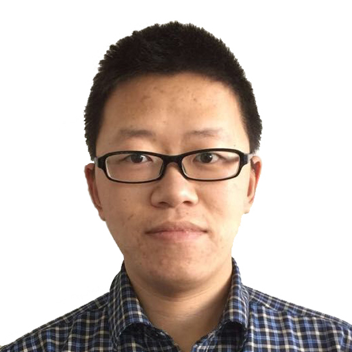

SEED Lab
Soil Ecology and Environmental Dynamics
at the University of Hong Kong
Soil Ecology and Environmental Dynamics
at the University of Hong Kong
The Soil Ecology and Environmental Dynamics (SEED) Lab investigates how soil biogeochemical processes respond to global environmental change. Our research integrates field experiments, laboratory analyses, and quantitative approaches to understand soil carbon cycling, ecosystem functioning, and climate–soil feedbacks across terrestrial ecosystems. Our goal is to identify nature-based solutions to carbon sequestration, climate mitigation, and food security.

Guopeng Liang
Assistant Professor
School of Biological Sciences, The University of Hong Kong
SEED Lab is actively recruiting motivated PhD students, postdoctoral researchers, and research assistants. Candidates with interests in soil biogeochemistry, carbon cycling, and microbial ecology are especially encouraged to apply.